author: niplav, created: 2019-06-21, modified: 2019-12-02, language: english, status: notes, importance: 4, confidence: highly likely
It is currently unknown how many ways exist to arrange n circles in the affine plane. However, for up to 5 circles, the number is known. This page attempts to classify the current known combinations.
Any unintersected plane is contained by n circles. How many planes exist that are contained in n circles?
The characteristic description of a circle combination lists the number of planes contained by n circles, in ascending order. For example, the following circle has the description 1,2,1,1:
There is only one plane not contained by any circles (the outer plane), 2 planes only contained by one circle, 1 plane contained by 2 circles, and 1 plane (the innermost circle) contained by all 3 circles.
As one can see, the outer plane is counted as well.
Conjecture: The characteristic description of a circle is a unique identifier of the circle combination described (no 2 circle combinations have the same characteristic description).
| Image | Unintersected lines | Line intersections | Unintersected planes | Characteristic description |
| 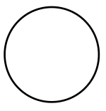 | 1 | 0 | 1 | 1,1 |
| Image | Unintersected lines | Line intersections | Unintersected planes | Characteristic description |
| 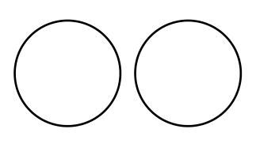 | 2 | 0 | 3 | 1,2,0 |
| 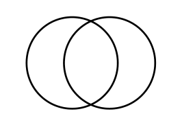 | 4 | 2 | 4 | 1,2,1 |
| 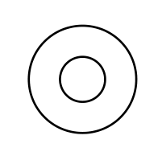 | 2 | 0 | 3 | 1,1,1 |
| Image | Unintersected lines | Line intersections | Unintersected planes | Characteristic description |
| 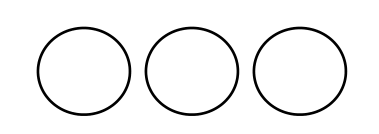 | 3 | 0 | 4 | 1,3,0,0 |
| 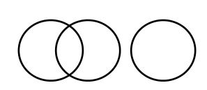 | 5 | 2 | 5 | 1,3,1,0 |
| 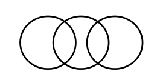 | 8 | 4 | 6 | 1,3,3,0 |
| 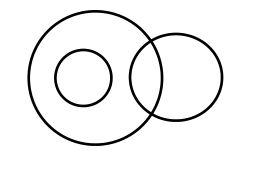 | 5 | 2 | 5 | 1,2,2,0 |
| 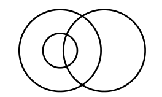 | 8 | 4 | 6 | 1,2,2,1 |
 |
5 | 2 | 5 | 1,2,1,1 |
| 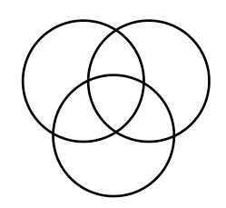 | 12 | 6 | 8 | 1,3,3,1 |
| 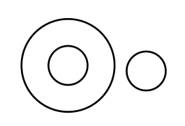 | 3 | 0 | 4 | 1,2,1,0 |
| 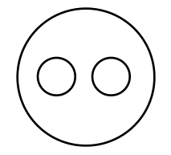 | 3 | 0 | 4 | 1,1,2,0 |
| 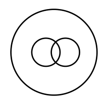 | 5 | 2 | 4 | 1,1,2,1 |
| 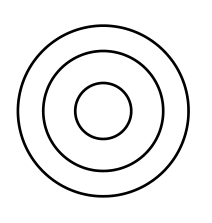 | 3 | 0 | 4 | 1,1,1,1 |
| 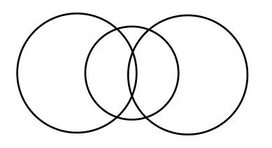 | 12 | 6 | 8 | 1,4,2,1 |
| 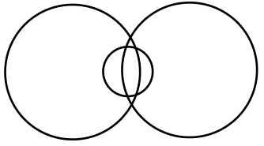 | 12 | 6 | 8 | 1,2,4,1 |
| 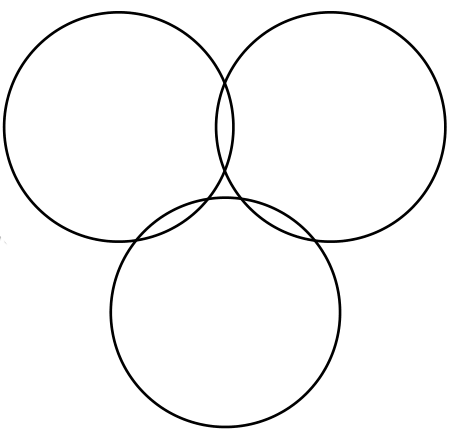 | 12 | 6 | 8 | 2,3,3,0 |